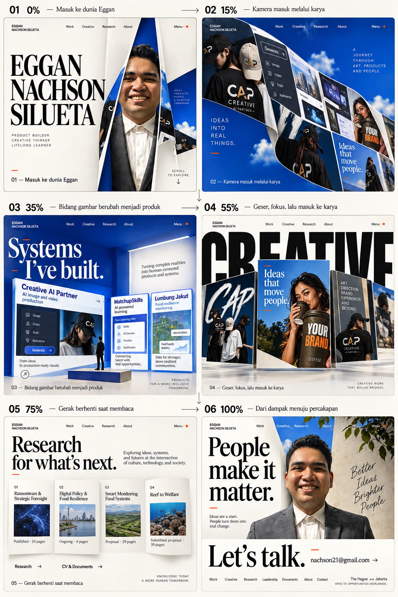

Gambar acuan pengguna

Website berjalan — dapat diklik dan di-scroll
Ini adalah iframe website asli dari paket, bukan screenshot hasil render. Perbandingan ini belum ditinjau melalui browser oleh pembuat paket karena akses browser terblokir.